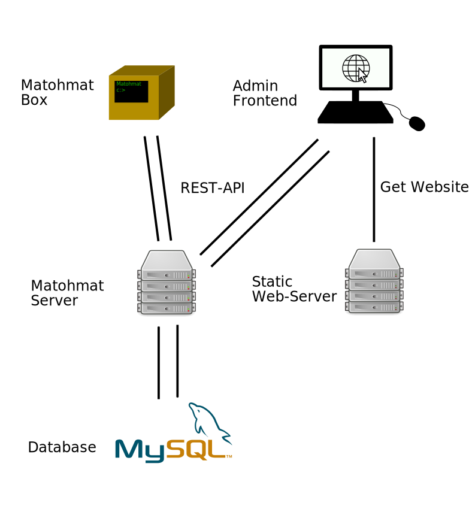

MatΩhmat documentation
MatΩhmat is a cash system designed to cell Mate, sweets and other joyful goods :D. MatΩhmat is created by and for the students of the IT-Fculty of the TH Nuermberg University. It is the successor of the k4cg Matomat and the Fablabl NBG Matomat.
MatΩhmat allows users to register and have an account where they can pay money to. From this account they can then buy what is Provided by the Fachschaft.
The design of the system is modern, open, and mostly designed with technologies that IT students of TH Nuermberg are able to understand. This should enable future generations of students to administrate, and extend the system with cool features.
MatΩhmat consists of three major parts,
- a Server using MySQL to store all Persistent information, and handle Background Jobs.
- a web based Admin frontend with which is possible to administrate the system.
- a frontend based on a Raspbery PI which handles the interaction with the users.

The Server
The core is the Server with which all other parts of MatΩhmat communicate with through a REST-API based on the JSON protocol. The Server is written in java using the Spring Framework for providing the REST-API, and Hibernate to communicate with the MySQL database.
The Admin-Fronted
The Admin-Frontend is written HTML, CSS, and TypeScript using the Angular framework. It is a web application that can be delivered by a static web sever like Nginx. All the the persistent data it need it gets form the MatΩhmat Server.
The User-Frontend
The User-Frontend is a little wooden box containing a touch display a RaspberryPI, and a RFID scanner. It displays a touch friendly webpage hosted on the device itself. The page comunicates directly with the MatΩhmat Server through its REST-API. It is created using pure HTML5, CSS and JavaScript.